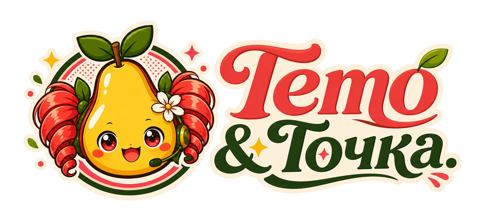
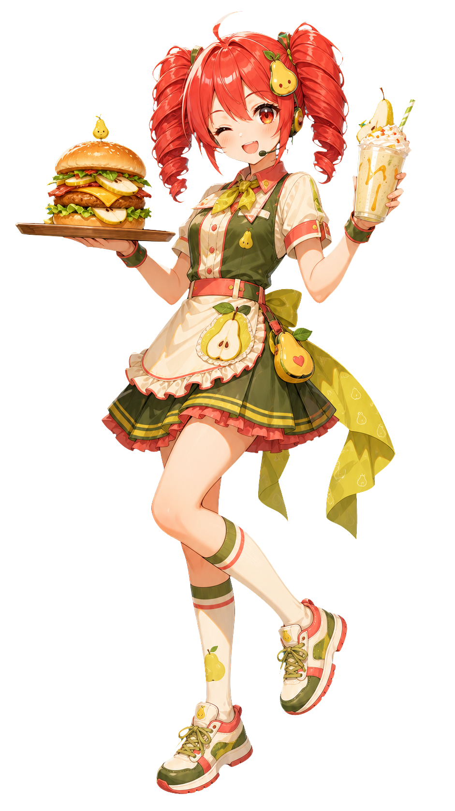
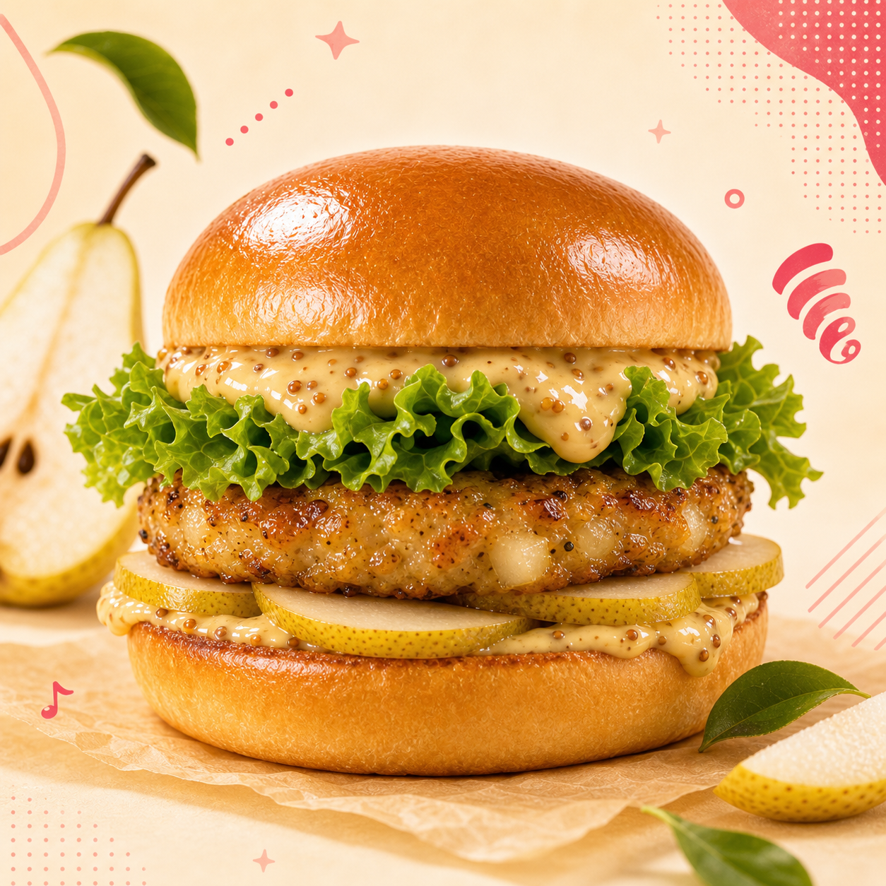
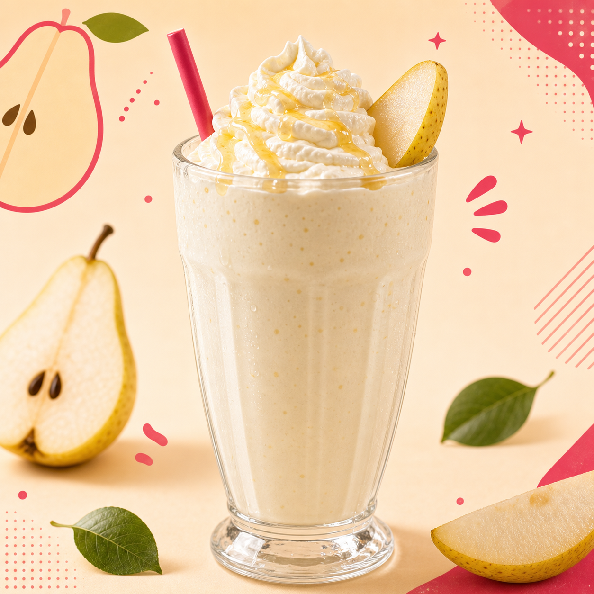
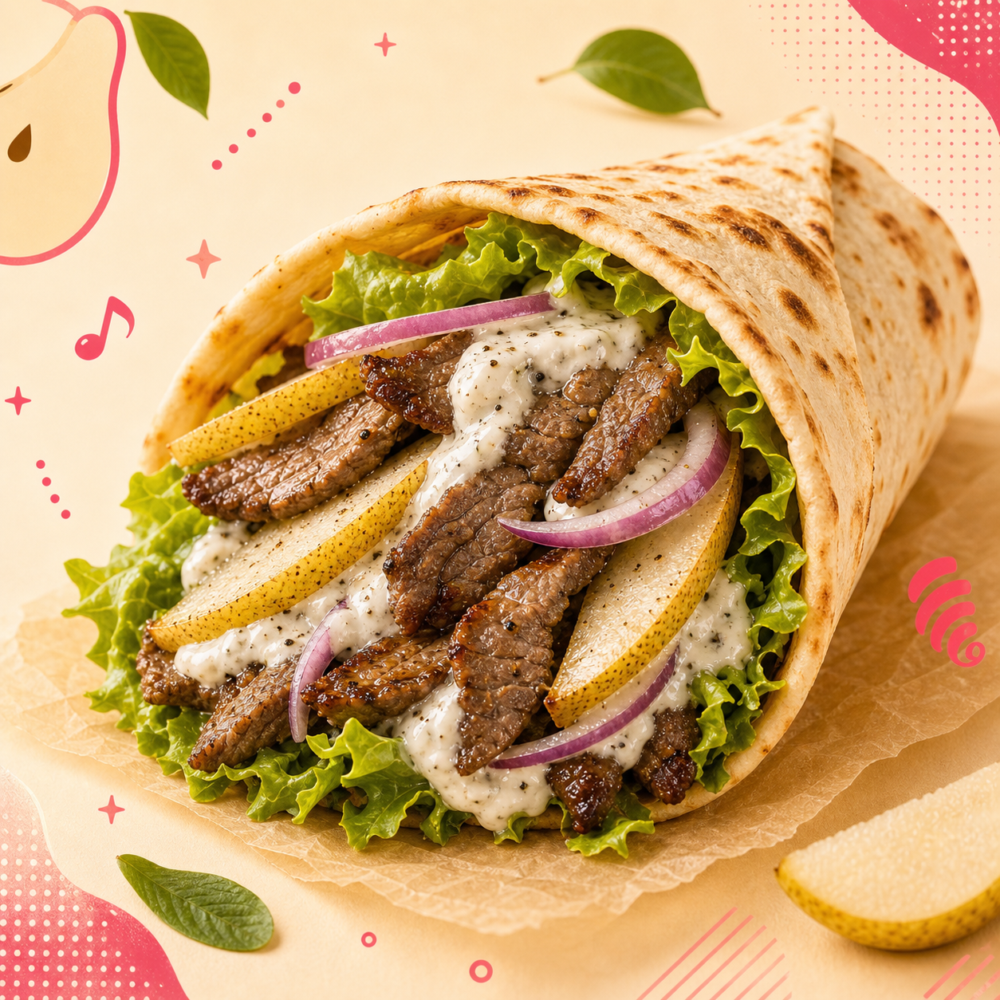
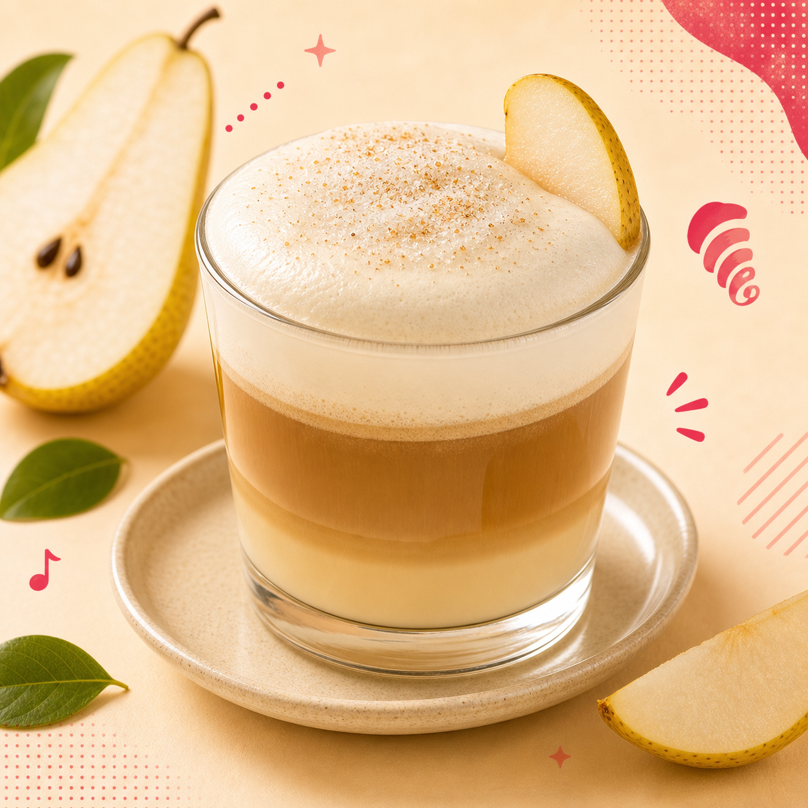
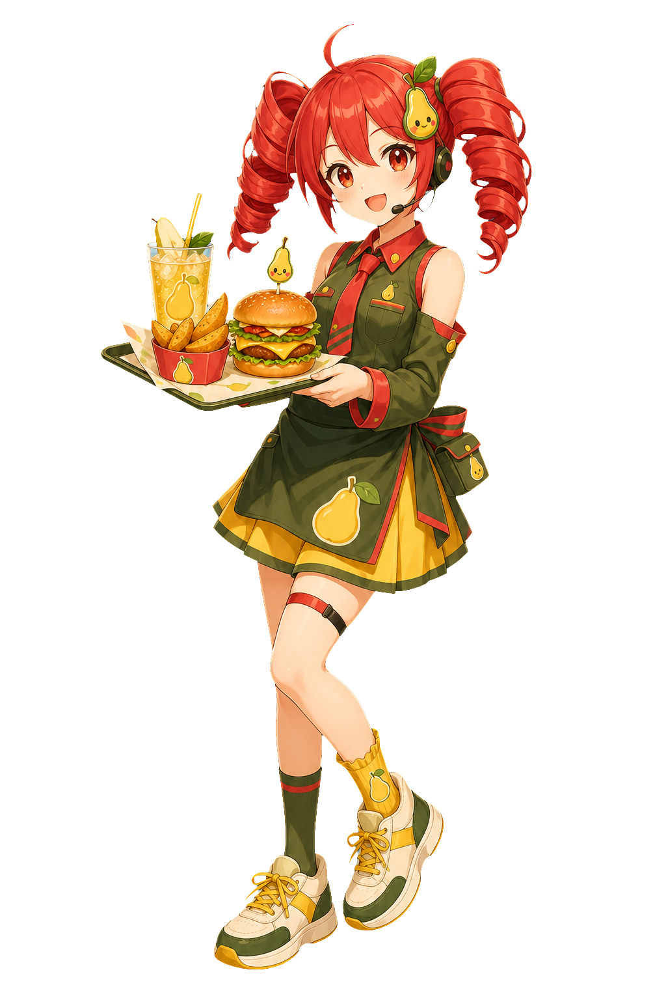

бургер
Бургер с грушевой котлетой
Грушевая котлета, листья салата и грушево-горчичный соус.
349 ₽Тето разогревает сцену
Готовим меню
Выбрать вкусPear pop fast food
Тето ведет кухню, а груша добавляет каждому блюду сладкий удар: бургеры, снеки, кофе, коктейли и десерты без скучного фона.





Почему сеть
Она начинала с домашнего дюшеса и пирога на маленькой кухне, а потом поняла: груша может быть в бургере, кофе, снеках и горячем обеде. Так появилась сеть, где быстрый заказ все равно звучит авторски.
Комбо смены
Быстрые наборы для тех, кто хочет сразу полный припев: горячее, что-то хрустящее, напиток и грушевый акцент в каждом вкусе.

Заглядывай
Готовим на месте, отдаем быстро. Тето встречает гостей, а витрина держит десерты, кофе и горячие позиции.
Выбрать вкус